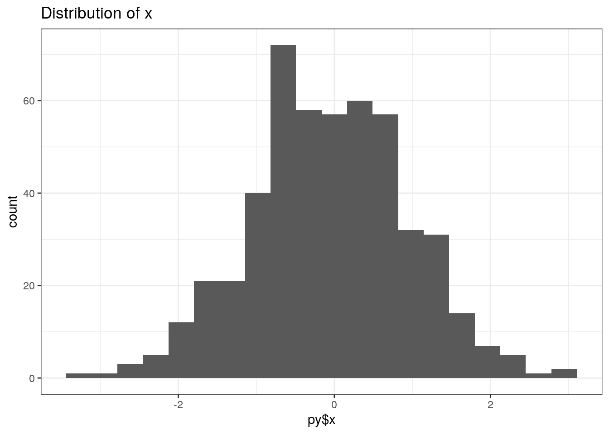
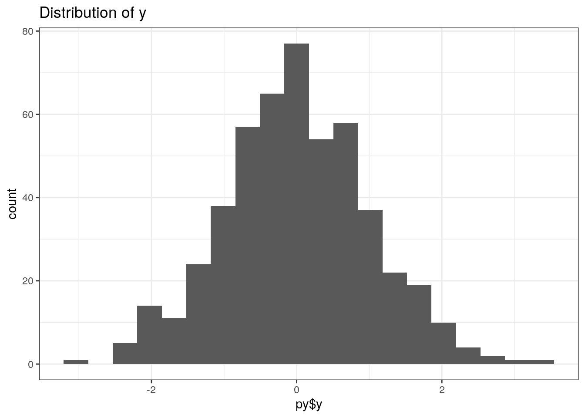

May 9, 2021
Introduction
I’ve run Python code in a Jupyter notebook many times, but I wasn’t aware that it could be run within an Rmarkdown file. Not only is it possible to knit Python code in an Rmarkdown file, but you can actually make R and Python play together. I’m going to show off just a little bit of that here but keep it pretty simple.
Running python code in an Rmarkdown file
Then, to run Python code it’s as simple as making a python code chunk (using {python}) and run your code. Let’s start with the most basic example possible: tell the world hello.
p1 = 'Hello'
p2 = 'world!'
print(p1, p2)## Hello world!Access R objects in a python code chunk
Ok cool, so running Python code works! Now let’s make an object in R and then access it in a python chunk. Let’s use the same sort of basic hello world example from above.
First, create an R code chunk (using {R}) and load the reticulate package to allow crosstalk between R and python:
library(reticulate)Make an R code chunk and create an object for saying hello:
R_hello <- 'Howdy'Now, make a python code chunk and access the R_hello object using r., then print the hello message.
python_hello = 'class'
print(r.R_hello, python_hello)## Howdy classAccess python objects in an R code chunk
The reticulate package is also required for accessing python objects in an R code chunk. You don’t need to rerun this again, but I’m just including it here for clarity in case someone skims down to this point.
library(reticulate)Make a python code chunk and create an object for saying hello
python_hello = 'Hey there'Now, make an R code chunk and access the python_hello object using py$, then print the hello message.
R_hello <- 'fellow humans'
cat(c(py$python_hello, R_hello))## Hey there fellow humansIs that it?
The examples I ran through above were pretty basic; I only showed how to print strings (character objects). Of course, you can do way more than this using Python and by making Python and R talk to each other using reticulate. This was supposed to be a pretty basic primer just to show that this is possible and works. Let’s show something a little more complicated just to show that it’s possible to do those kinds of things.
Let’s say, for example, that we really like python’s random sampling method and greatly prefer to use it instead of R. However, we love R’s plotting utilities, especially ggplot, and we prefer to use it because a) we prefer the way those plots look, and b) we already know how to use it. What we can do is perform the random sampling using the preferred method in python, and then turn around and plot the distributions in R using ggplot. Let’s run that example.
Again, we must load the reticulate package so that we can make R and python talk to each other.
library(reticulate)Take random samples from a normal distribution in python using the numpy library:
# load python libraries
import numpy as np
# use numpy to take random samples from a normal distribution
x = np.random.normal(0, 1, 500)
y = np.random.normal(0, 1, 500)Plot the distributions of random samples x and y in R using ggplot:
library(tidyverse)## ── Attaching packages ─────────────────────────────────────── tidyverse 1.3.0 ──## ✓ ggplot2 3.3.3 ✓ purrr 0.3.4
## ✓ tibble 3.0.4 ✓ dplyr 1.0.2
## ✓ tidyr 1.1.2 ✓ stringr 1.4.0
## ✓ readr 1.4.0 ✓ forcats 0.5.0## ── Conflicts ────────────────────────────────────────── tidyverse_conflicts() ──
## x dplyr::filter() masks stats::filter()
## x dplyr::lag() masks stats::lag()ggplot() +
geom_histogram(aes(py$x), bins = 20) +
theme_bw() +
labs(title = 'Distribution of x')
ggplot() +
geom_histogram(aes(py$y), bins = 20) +
theme_bw() +
labs(title = 'Distribution of y')
Acknowledgments
This post wouldn’t have been possible without Third Coast Coffee. They’re not a sponsor, but I wouldn’t have gotten through this semester without a ton of their Ethiopian Yrgichaffe.